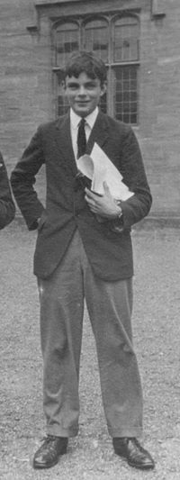
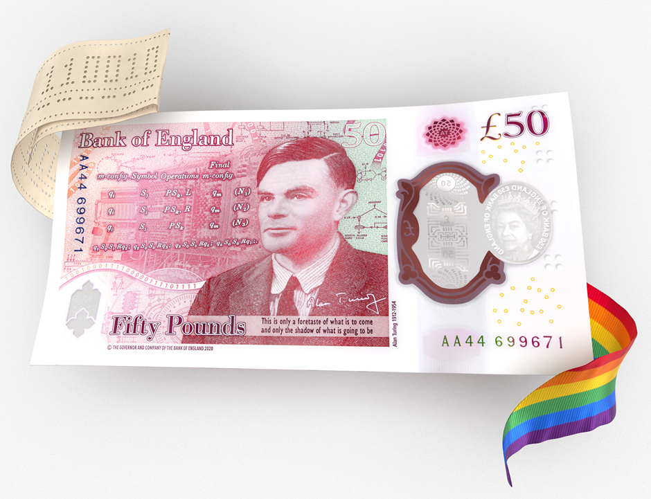

Statue of Alan Turing working on a cipher, Bletchley Park. (Credit: Antoine Taveneaux,Wikimedia)
Who was Alan Turing?
At a glance...
Full name: Alan Mathison Turing
Date of Birth: 23 June 1912, Maida Vale, London
Death: 7 June 1954, Wilmslow, Cheshire
Hailed as the father of computer science, Alan Turing is known for the turing test, decoding the german enigma machine
in WWII and conceptualizing the modern computer.

A young Turing at Sherborne School in Dorset. (Source: Jason Mac from pinterest)
Turing Machine (1936)
Arguably, Alan Turing’s most important contribution to the field of computer science was his concept of the 'Turing
Machine'. In 1936 during his PhD at Princeton, he published a paper titled “On Computable Numbers, with an application
to the Entscheidungsproblem,”. In it, Turing presented the idea of a hypothetical machine which could perform a
mathematical computation if it was fed a long paper tape of instructions which it could read one at a time.
Turing demonstrated that you could construct a universal machine. This was ground-breaking stuff since on closer inspection,
this ‘universal machine’ is essentially the modern computer.
The Enigma (1939)
During WWII, Turing returned to Britain to work in the British Government Code and Cipher School and cracked the
‘unbreakable’ german enigma secret ciphers used by the german navy. After 1939, with help from other mathematicians
Turing developed a new machine called the Bombe capable of deciphering the enigma messages at a large scale.
A wartime picture of a Bletchley Park Bombe. (Source: Wikipedia)
Turing Test (1950)
Turing can most famously be attributed with the 'Turing Test' : a simple yet brilliant experiment
to distinguish man from machine.
In the test, there are three terminals: two are operated by humans and one by a computer.
One of the two persons (assume A) has the job of asking questions from the other person(assume B), and the
computer on a specific subject. This process is repeated a few times. At the end, A is asked to distinguish
B from the computer. If A predicts incorrectly based on the answers, then the computer is said to possess
Artificial Intelligence. Of course, the Turing Test has its fair share of limitations and critics, yet despite
the critics the Turing test remains at the heart of Artifical Intelligence.
A simple illustration of the Turing Test concept. (Source: javatpoint)
Later Years (1952-54)
In 1952, Turing was convicted of gross indecency. Two years later on 8 June 1954, he was found dead in his apartment
as a result of cyanide poisoning, later declared to be suicide.
In 2013 he was formally pardoned from ‘gross indecency’ by Queen Elizabeth II. On 15 July 2019, he was announced as the new face of the 50 note,
which went into circulation on 23 June 2021, his date of birth.

The new £50 banknote, featuring Alan Turing. (Source: Bank of England)